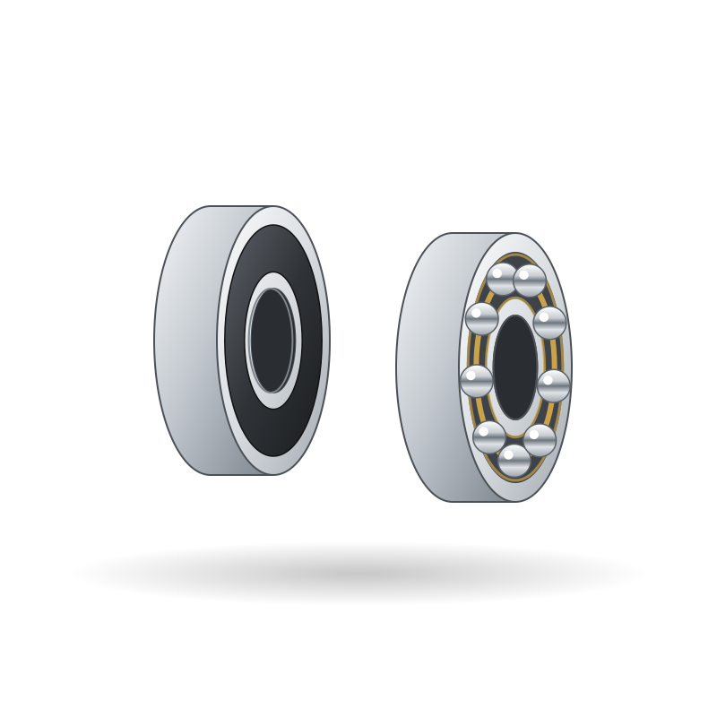
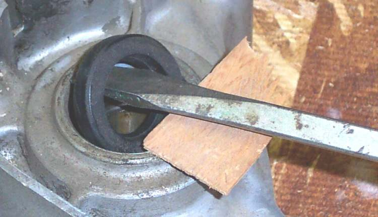
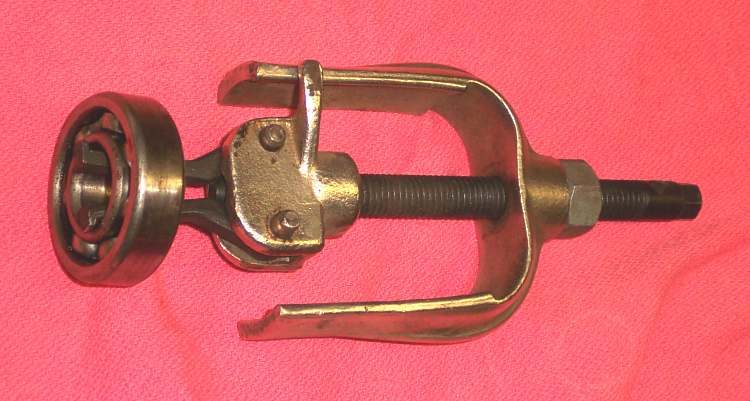
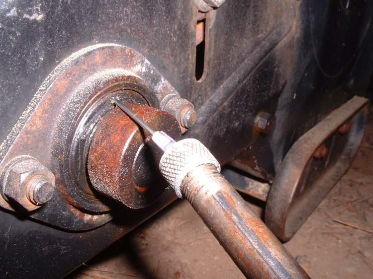
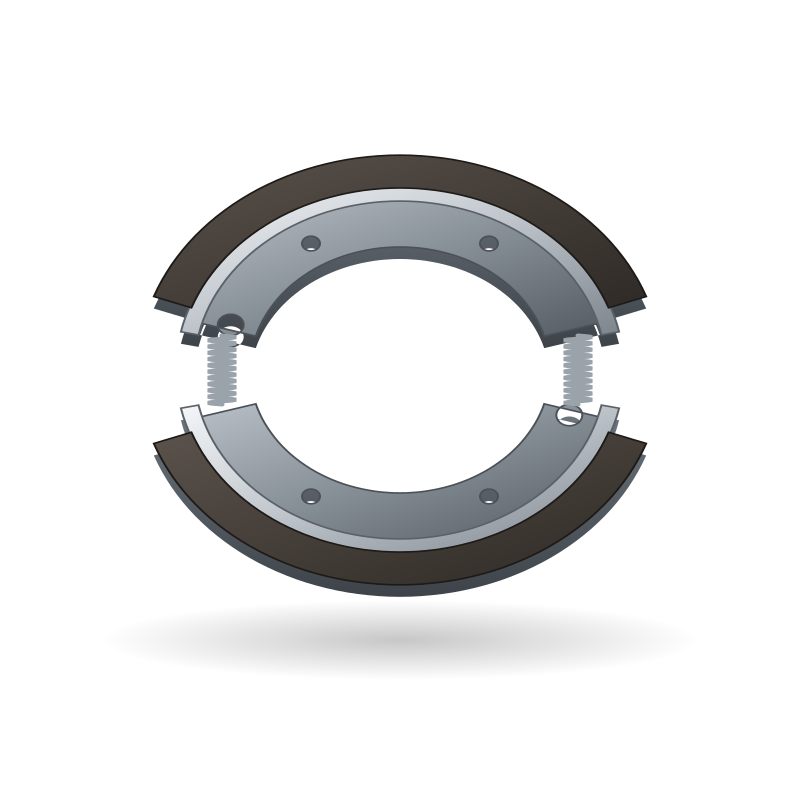

Spare parts / TVS / Raider 125 / Wheel bearings
TVS Raider 125 wheel bearings
Wheel bearings for the TVS Raider 125: when to replace it, what it costs, where to buy it and how to fit it.

IllustrationWorkshop photos




Where to buy
- Google ShoppingSearch results for this partgoogle.com ↗
- eBaySearch results for this partebay.com ↗
- AliExpressSearch results for this partaliexpress.com ↗
- AmazonSearch results for this partamazon.in ↗
- FlipkartSearch results for this partflipkart.com ↗
- TVS Genuine PartsOEM direct: Official TVS parts shop: Jupiter, Apache, Raider, HLXtvsmotor.com ↗
- BoodmoMarketplace (genuine + aftermarket): 400+ suppliersboodmo.com ↗
- Hero Genuine Parts (hgpmart)OEM direct: Official Hero parts: Splendor, HF Deluxehgpmart.com ↗
- Bajaj Genuine PartsOEM direct: Official Bajaj parts app and distributor locator: Pulsar, Platina, Boxerbajajauto.com ↗
Check the part number for your model year before you buy. Genuine (OEM) parts first; good aftermarket parts are fine for wear items. Links open shop searches; Moto Zero earns nothing from them today and will say so here if that changes.
Fit it yourself
Fitment
| Model | TVS Raider 125 |
| Type | Commuter |
| Engine | 125 cc |
| Final drive | Chain |
| Brakes | Disc and Drum |
| Main markets | IN |
Questions
How often should I replace the wheel bearings on a TVS Raider 125?
As a guide, 20,000-40,000 km or play detected. The owner's manual for your model wins, and riding on dusty roads, with a passenger or with heavy loads shortens it.
How much does a TVS Raider 125 wheel bearings cost?
Typically US$ 5 to 40, depending on genuine or aftermarket and the shop. Prices are indicative.
Can I replace the wheel bearings myself?
The job is rated 3 of 5 for difficulty. It is safety-critical: if you are not sure, have a mechanic check your work before you ride.
More parts for the TVS Raider 125
 Illustration
Illustration Illustration
Illustration
Illustration Illustration
Illustration Illustration
Illustration Illustration
IllustrationAll parts for the TVS Raider 125 → Wheel bearings for other bikes →